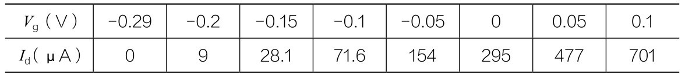
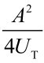
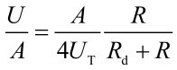
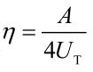
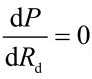

表4-1 3DQ测试数据

李清
我手头有两种飞利浦的MOS管，一种是3DQ，另一种是3DP，我对这两种管子进行了测试，得到的数据如表4-1和表4-2所示。
表4-1 3DQ测试数据
表4-2 3DP测试数据
3DQ的栅漏极转移特性曲线如图4-52所示。3DP的栅漏极转移特性曲线如图4-53所示。
从上面的数据和曲线上可已看出，两种管子都能做矿石机检波，但是性能不一样，3DQ的零栅压漏极电流远小于3DP的零栅压漏极电流，所以3DP管对有载Q值的影响远大于3DQ，从这一点上看3DQ更好些。从特性曲线上看，零栅压时3DP的跨导更高些，从这点看，3DP又优于3DQ。因此这两种管子各有千秋，实际使用时或许3DQ会更好些。
在“雨伞大环矿石机”上实际收听时，这两种管子声音都很大，晚上10点试验完成后，我忘记将MOS管取下来，第二天一早醒来后感觉卧室窗边有声音，以为是有老鼠，过去一看，声音是雨伞大环上的“大罐头”耳机发出的声音，是用3DQ检波的。
实际收听实验我还发现，3DQ检波的输出阻抗为10～20kΩ，而零栅压漏极电流是0的增强型MOS管的输出阻抗要高得多，大约是四五十千欧。
图4-54所示为测试场景。雨伞大环矿石机实物及电路如图4-55所示。

图4-52 3DQ的栅漏极转移特性曲线

图4-53 3DP的栅漏极转移特性曲线

图4-54 测试场景
注：
（1）上述测试得到的数据仅对测试样品负责，所得结论不一定有代表性。
（2）上述测试均在业余条件下进行，受仪表、环境等因素的影响，所得到的数据未必准确，因此不做测试精度的讨论与争论。
图4-55
李清
用MOS管检波是近几年来矿石机技术的新方向，但是并不是所有的MOS管都可以做矿石机的检波，而只有一部分能做检波之用。这一段时间我做了不少次MOS管检波的试验和测试，在实验中摸索到了一个用指针式万用表判断MOS管是否能做矿石机检波的简单方法。现以N沟道双栅MOS管为例介绍一下。
（1）指针万用表放在R×1k挡位，用一条短导线的一端将双栅MOS管的两个栅极连接在一起，另一端暂时悬空不接，万用表的正表笔接MOS管的源极（S极），黑表笔接到MOS管的漏极（D极），如图4-56（A）所示。
用手做接近和远离栅极导线的动作，如果万用表针随手的动作而摆动则管子是好的，就可以往下继续测试了。
（2）万用表与MOS管保持上述的连接不变，将栅极导线悬空的一端连接到管子的源极上，如图4-56（B）所示。
图4-56 用万用表判断MOS管的方法
这时万用表的指示可能有3种情况。
a.表针指示电阻值接近0Ω，如图4-57所示。
这表示该MOS管是关断栅压较高的耗尽型管子，大多不能做矿石机的检波使用，即使有的管子勉强能用效果也不好。
b.表针指示电阻值为无穷或者很大（数百千欧），如图4-58所示。

图4-57 万用表指示电阻接近0Ω

图4-58 万用表显示电阻值为无穷大或很大
这表示该管是增强型的管子，这种管子大多数是可以用作矿石机检波的，但是效果好坏会有不同的差别。
c.万用表针指示电阻值为在数百千欧姆到数十千欧姆，如图4-59所示。
图4-59 万用表指针指示数百千欧姆至数十千欧姆
这表示该管是关断栅压较小的耗尽型管子，性能接近零开启栅压的增强管，适合检波使用。
现代的MOS管栅极一般都有保护电路，以上方法在大多数情况下不会损坏管子，但不是百分之百安全，因此最好带上防静电手环操作，如果没有防静电手环也可以在操作之前用手触摸一次地线，释放掉静电后再测试。
许建伟
当V小于40mV时，存在以下相对严格的关系：
I=β（Vg +Va ）V
式中β是场效应管的增益系数，Vg 是栅极与源极之间的电压，Va 是夹断电压，V是漏极电压，I是漏极电流，显然源漏小信号电导是g=β（Vg +Va ）。
零点电导g0 =βVa ，3DQ的零点电导g 0 =0.5（kΩ-1 ），零点电阻Rd =1/g0 =2 kΩ
Vg =70mV，V=14.3mV，I=18μA，g=1.26kΩ-1
Vg =36mV，V=14.8mV，I=12μA，g=0.81kΩ-1
Vg =0mV，V=15.3mV，I=8μA，g0=0.52kΩ-1
Vg =-36mV，V=33.0mV，I=7μA，g=0.21kΩ-1
令36mV时的g为g1 ，−36mV时的g为g2 ，那么有：
g1 -g2 =β（Vg +Va ）−β（−Vg +Va ）=2βVg
因此β=（g1 −g2 ）/Vg /2=（0.81−0.21）/0.036/2/1000=0.0083
Va =g0 /β=0.52/1000/0.0083=0.063V=63mV
即3DQ的夹断电压Va =63mV
关于零点检波
I=β（Va +Vg ）V=βVa （1+Vg /Va ）V=g0 （1+Vg /Va ）V
在梁氏3DQ机内，设初级L1输出电压是A×sinωt，L1与L2的电压变换比是k∶1，检波输出电压为V0 ，检波负载电导为gx ，那么就有：
谐振电压A sin ωt，而电路中栅极接线圈热端，所以V g 为谐振电压，即V g =A sin ω t。
漏源上得到的电压是L2的电压减V0 ，即V=A×sin ωt/k− V0 ，代入得
I=g0 （1+A sinωt/Va ）（Asinωt/k− V 0 ）
通过积分计算，可得一个周期的平均电流是：I2 =g 0 ×A2 /（2kVa ）−g0 ×V0
检波平均电流与负载电流相等，所以：g0 ×A2 /（2kVa ）−g0 ×V0 =gx ×V0
解得V0 =A2 /（2kVa ）×g0 /（g0 +gx ）……场效应管小信号检波方程
显然，检波输出与信号高频信号幅度之间的关系是平方关系，属于平方检波。以上计算成立的条件是：谐振电压小于夹断电压Va ，即A＜Va 。当A＞Va ，将逐渐变为线性检波。
关于检波方程
检波方程：
V0 =A2 /（2kVa ）×g0 /（g0 +gx ）
式中A是谐振峰值电压，k是L1与L2的电压比，g0 是场效应管一零点电导，gx 是负载电导，Va 是夹断电压。如果写成电阻形式，g0 =1/Rd ，gx =1/Rx ，式中Rd 是零点电导，Rx 是负载电阻，那么
V0 =A2 /（2kVa ）×Rx /（Rd +Rx ）
显然，这是一个串联分压电路方程，其中检波输出电动势是U=A2 /（2kVa ），检波输出内阻是零点电阻Rd 。高频的零点输入电阻也是零点电阻Rd 。
与二极管小信号检波电压效率对比
二极管检波电动势U=A2 /（4uT），电压变换效率是c=U/A=A/（4uT）
场效应管检波电动势U=A2 /（2kVa ），c=U/（A/k）=A/（2Va ）
3DQ的电压变换效率：c=A/（2×0.063）=A/0.126
二极管的电压变换效率：c=A/（4×0.026）=A/0.104
许剑伟
当信号很小时，主要靠二极管非线性的平方项来检波，高次项非常小，可以忽略，所以也称为“小信号平方律检波器”。
设y=Vsin（t），经平方计算得到U=y2 =V2 （1−cos2t）/2，滤波后高频分量cos2t部分滤除，输出得到低频信号U=V2 /2，因此，平方律检波器有一个特点：输出信号U与输入信号V的平方成正比。
1.二极管方程及零点Rd
二极管方程是I=Is =[exp（V/UT ）−1]，式中UT 是热电压（与热力学温度成正比），V是二极管的压降，I是二极管的电流，Is 是反向电流，常温下UT 是26mV。由于实际二极管不是理想二极管，所以实测UT 会比26mV稍大一些，实际UT 与标准UT 的比值称为理想因子n。如，1ss86、bat85、1n60等，UT 为26～28mV，n接近于1。1N4148的UT 可高达50mV，n=1.9。
二极管的微变电阻Rd ，可以由二极管方程求导得到：

或者写为
当输入信号接近于0，用V=0代入得零点电阻为 ，下文Rd
指零点Rd
。
，下文Rd
指零点Rd
。
例：测得二极管UT =26mV，Is =400nA（0.2V反向加电压测得），求Rd 值。
因为Is
是在较低电压下测得的，接近于零点状态，所以 。
。
2.小信号条件下二极管方程及检波输出
记 ，使用马克劳林级数将二极管方程展开得到
，使用马克劳林级数将二极管方程展开得到

当V是小于UT 的小信号，x为小量，我们可以忽略x的3次以上高阶小量，即非线性部分是平方项x2 /2，其他项忽略。
图4-60所示是一个典型的检波电路。
图4-60
设输入高频信号为V=A sin ωt，周期为T，此电路中，二极管上的压降不是V，而是V− U，所以

负载电流等于U/R，等于一周期内流过二极管的平均电流，于是

对V求积，一周期内积分结果为0，所以

因为U的平方是小量，所以

式 （1） 就是小信号检波输出公式。输出电压U与输入高频电压A之间是平方关系。这是一个分压电路公式，即电源电动势为 ，电源内阻是Rd ，负载电阻是R。当R=Rd 时，负载得到最大功率。因此，矿石收音机制作中，耳机阻抗R接近于二极管Rd 时，可以获得最大功率。通常，使用自制变压器进行阻抗变换，使得Rd =R。
检波效率 ，
当R为空载时，取得最大效率 式（2）
检波效率η反应二极管的检波性能，UT 小的二极管，检波效率高。以上计算，没有考虑二极管的频率响应问题。受频响限制，随着频率升高，检波效率会下降。BAT85管子，适用于中波检波，当频率达到10MHz以上时，检波效率将会快速下降。
例：如图4-58所示电路图，输入正弦信号峰值为26mV，UT =26mV，Rd =R=50kΩ，求检波输出电压U及负载上的功率P。


可见，输出信号功率十分微弱，以上计算仅计算出直流分量，广播音频分量还会更小（小10倍量级）。并非所有耳机在0.21nW功率下都能发出声音，所以高灵敏度的矿石收音机，应选用高灵敏度的耳机。
3.关于输入阻抗
图4-61所示是二极管检波器输入阻抗与正弦输入电压之间的关系。

图4-61 检波器输入阻抗与输入电压的关系
由图4-61所示得知，不管二极管输出接上轻负载还是重负载，信号较弱时（输入峰值小于100mV），检波器的输入阻抗总是接近于零点电阻Rd 的。简化计算中，可以认为小信号时，负载与输入相互独立，输入阻抗就是Rd ，与负载无关。根据这一特点，检波后进行音频阻抗匹配，只需做到Rd 等于音频负载阻抗，就达到了音频匹配，而高频部分的阻抗匹配另行计算。
从能量转换的角度来看，小信号检波中，由于检波效率低下，高频信号输入到二极管时，大部分能量损耗在二极管零点Rd 上，不管音频负载重点或轻点，都只有少量能量转换为音频信号，改变不了Rd 损耗大部分能量的事实，因此输入阻抗按Rd 计算便可。
如图4-62所示，设高频信号内阻为Rp ，音频已实现阻抗匹配Rd =R，当二极管Rd 取何值，小信号时，负载R上取得最大功率P。
图4-62
设信号源幅度为A，二极管输入端电压为A′，因二极管输入阻抗为Rd ，所以二极管输入端所得分压为
输出电压U可由式（1）计算，所以

把A′代入得到
当 时，P取得最大值，即
解得，Rd =3Rp 时，负载R可以取得最大功率。
图4-63所示是根据式 （3） 绘图，系数部分 看作单位1绘得，横坐标是Rd
/Rp
，纵坐标是输出功率P。
看作单位1绘得，横坐标是Rd
/Rp
，纵坐标是输出功率P。
图4-63
由该图可以看出，当Rd =3Rp 时，P为最大值。当Rd ＞1.5Rp ，输出功率就接近最大值了。
制作矿石收音机时，选取Rd ＞1.5Rp 的二极管，可以取得较高的灵敏度，而且，随着Rd 取值的增加，谐振回路负载变轻，Q值提升，选择性变好。
4.Rd 相关的阻抗匹配综述
不管高频输出阻抗是多少，Rd 等于音频负载时（Rd =R），负载得到的功率最大。
不管音频负载阻抗是多少，Rd 等于3倍高频输出阻抗时（Rd =3Rp ），检波输出的功率最大。
5.Rd 的测量
Rd 是矿石收音机阻抗匹配的重要参数。因此有必要实测，方便做好矿石收音机阻抗匹配。
由于现代检波二极管的频响都很好，所以，从直流到10MHz频率（有些管可达100MHz以上），二极管的伏安特性都遵守二极管方程。那么，用高频法测量Rd 与直流法测量Rd ，所得结果非常接近。推荐使用直流法测量，图4-64所示为简易测法，Rd 计算公式由二极管方程导出，实际测量时，使用一块万用表即可。为了简化计算，一般使用Excel辅助计算。
上述测量有个缺点——无法直读Rd ，因此测量一次Rd 很烦琐。图4-65所示为改进电路，是LC测量兼Rd 测量双用表，该表可以直读二极管Rd 。

图4-64 二极管uT、Rd 测量仪
该表利用谐振测量电感量，量程很宽，可测得0.1μH～2000H电感，同时可以测量二极管的Rd 值，它利用单片机，测量出二极管两点上的伏安值，然后代入二极管方程，即可算出Rd 的值。
图4-66所示为爱好者制作的Rd /LC表。
数字Q表
Q表可以用来测量线圈的Q值。高灵敏度的矿石收音机需要使用高Q值线圈，目前，矿石收音机使用线圈的最高Q值约为1800。商品表Q值量程一般只能做到1000，因此，商品表用于制作高品质矿石收音机有点尴尬，大于1000就测不了，而且价格不菲。业余条件下可以DIY Q表，以满足矿石收音机制作的需要。本文介绍的这款表可以测得2000以上Q值，精度与现代商品Q表相当（精度优于2%）。
Q表除了可以测量线圈Q值，还可以测量电感量、电容量等参数。

图4-65 改进后的电路
数字式Q表带有扫频功能，能自动查找谐振点，因此，DIY过程中，对减速调谐器的要求不高。
图4-67中，AD9833为DDS信号发生器，输出信号送入56∶1磁环变压器初级，该变压器次级只有一匝，提供极低阻抗的信号输出，激励谐振器。谐振器是由500pF高Q可变电容与被测电感构成的。谐振器的谐振电压由2sk117场效应管缓冲放大，再经毫伏表放大、检波，由单片机内置AD转换器测量出检波电压，从而计算出谐振电压V1 。校准时，测出DDS输出信号V2 ，那么谐振器的Q值就是56×V1 /V2 ，由于可变电容高Q，激励变压器低阻，它们的损耗可以忽略，那么谐振器Q值就是被测电感的Q值。
图4-68所示为两位爱好者制作的两款Q表。

图4-66 爱好者制作的Rd /LC表

图4-6 750kHz至11MHz高频Q表（带自动关机）

图4-68 两位爱好者制作的Q表
图4-69所示为使用图4-67所示的第二款Q表进行实测操作。

图4-69 使用图4-67所示的第二款Q表进行实测操作
李清
矿石机爱好者在矿石机的制作和实验中往往需要用仪表对矿石机进行一些必要的测量。大家使用的大都是些简陋的二手仪表，有些甚至是自制的仪表。而且，这些测量都是在业余条件下进行的，并无任何标准可以依靠，也根本谈不上精度，因此请读者对于这部分内容切莫过于较真。
本文中几个测量实例所使用的仪表如下：
指针式万用表：MF47
数字万用表：DT9204
数字电感电容电阻表：VICTOR 6243+
二极管Rd 表（许剑伟老师设计制作）
电阻箱：ZX21，串号为416
高频信号发生器：MSG-2560B，串号为9007
单圈环形天线（带29dB天线放大器）：自制
音频信号发生器：GFG-8019G，串号为2620061
超高频毫伏表：AS2271，串号为JD063
超高频毫伏表：ZN2270，串号为88049
双针音频毫伏表：LMV-189AR，串号为9080128
Q表型号：HP4342A，串号为84-45028
在制作或者实验矿石机时，往往需要检查二极管是否损坏，用普通的指针式万用表的电阻挡或是数字万用表的二极管测量挡都可以完成这一任务。
下面先介绍使用指针式万用表的电阻挡测量二极管的方法。
（1）判断二极管的极性
用指针式万用表的电阻挡测量二极管时可以方便地判断出二极管的正负极，当指针式万用表的正表笔接二极管的负极，负表笔接二极管的正极时，测到的是二极管的正向电阻，此时表针指示的电阻值很小，故交换表笔测量两次二极管的电阻，在测量到二极管电阻值小的时候，正表笔接的就是二极管的负极，负表笔接的是二极管的正极。
（2）二极管是否损坏的判断
用指针万用表的R×1k挡测量二极管的正反向电阻，正常管子的正向电阻值大约是数千欧，反向电阻值约在数百千欧。由于二极管是非线性器件，测到的正向电阻值与测试时流过二极管的电流大小有关，故同一只二极管用不同的万用表或是同一只指针式万用表不同的电阻挡位，测到的正向电阻值是不一样的。这是因为用不同的万用表或是同一只万用表不同的电阻挡位测量二极管时流过二极管的电流值不同，所以呈现的正向电阻值不同。当然，用同一只表的同一电阻挡位测量不同二极管的正向电阻也是不一样的，这都是正常现象。
在测量中，我们当然希望二极管的正向电阻越小越好，正向电阻越小，表示正向压降越小，对检波有利。如果测到的正向电阻较大，那么很有可能被测管的是硅管，硅二极管的正向结电压比锗管和肖特基管的正向结电压高很多，所以做小信号检波时效率会很低，因此它不适于用作矿石机检波器件。用作矿石机检波我们还希望反向电阻越大越好，反向电阻越大表示二极管的反向漏电流越小，管子的性能越好。反向漏电流大了，二极管工作就不稳定，同时也会使检波效率下降，因此应避免使用。
如果测到了下面几种情况时就表示二极管已经损坏了：
ⅰ.二极管正反向电阻差别很小；
ⅱ.正向电阻很大；
ⅲ.反向电阻很小；
ⅳ.测正向电阻时表针就不动。
用指针式万用表测量二极管的正向电阻时，虽然知道正向电阻越小，管子的正向压降就越小，正向电阻越大，管子的正向压降就越大，但是并不能从测到的正向电阻值推断出管子具体的正向压降值，也就不知道测到的正向电阻值达到多少就是硅管，小于多少就不是硅管。我们可以测量一只正常的硅管的正向电阻，并以此值作为参考值，做一个大致的比较也就能判别出来了。如果要较准确测量二极管的正向压降值，就要用数字万用表的二极管测量挡。
（3）用数字万用表测量二极管
数字万用表都有二极管的测量挡，因此测量二极管也比较方便。
用数字表的二极管测量挡时，正表笔接二极管正极，负表笔接二极管负极，测到的读数是二极管的正向压降。交换两只表笔后，测量的是二极管的反向情况，表上的读数应该是二极管的反向电压值。由于一般数字万用表的表内电池只有9V，所以如果被测管反向电压小于9V，表上的读数就是管子的反向耐压值，如果被测管的反向电压大于9V，用数字表就测不出来了，这种情况下表上显示的数是发生“溢出”的读数。
一般情况下，锗管的正向压降在0.3V左右，肖特基管的正向压降在0.4V以下，有的能低到0.2V左右的，硅管的正向压降较高，在0.6～0.7V，所以如果测得的正向压降值超过了0.5V，被测管很可能就是硅材料的二极管。硅二极管正向压降高，用硅二极管检波的矿石机虽然在接收强信号时也能收听，但是检波灵敏度很低，收不到弱信号，因此硅二极管不适于做矿石机检波。
用数字万用表二极管测量挡测量二极管时，如果发现下述情况，表明二极管已经损坏。
ⅰ.被测二极管的正向压降值严重大于或严重小于该种管子的正常值；
ⅱ.被测二极管的反向电压值明显地小于该种管子的正常值；
ⅲ.测量值为零。
值得注意的是，无论是使用指针式还是数字式万用表，测量二极管，只能判断二极管是否损坏，不能判断出二极管检波效果的好坏。用指针式万用表，测量正反向电阻差别小的二极管，效果肯定不好，但是测得正反向电阻差别大的二极管，检波效果未必一定就好。常常可以遇到这样的情况：测量某些二极管的正向电阻和反向电阻都很正常，但实际装机时，发现这种二极管检波效果并不好。这是因为二极管检波效果好坏，是由二极管的多项指标性能共同确定的，单单从万用表测到的正反向电阻的数值上，反映不出二极管检波效果。因此，如果矿石机原来好好的，有一天忽然不响了，那我们就可以用指针式万用表测量检波二极管正反向电阻的方法，判断是否是检波管损坏了。但是，如果我们得到了几只从来没有用过的二极管，那我们就不能用指针式万用表测量检波二极管正反向电阻的方法，来判断哪只管子检波效果最好，至多，我们只能用万用表看一下里面是不是有坏管子混了进来。
同理，用数字万用表的二极管测量挡，虽然可以测出二极管的正向压降，但是这也只能作为判断二极管是否损坏的依据，不能由此判断出二极管的检波效果来。我们当然希望检波管的正向压降越小越好，但是，并不能说正向压降小的管子检波效果一定就比正向压降大的管子好。例如，用数字万用表的二极管测量挡，去测二极管1SS86和1N60，就能发现1SS86的正向压降比1N60低很多，但实际在矿石机上试一试就知道了，对于中波的弱信号检波来说，1N60要比1SS86效果好很多。其原因就在于1SS86的Rd 值远低于1N60，用1SS86检波时，矿石机调谐回路的有载Q值远低于使用1N60检波时的值。
对于矿石机来说，检波二极管的零点等效电阻Rd 是非常重要的，Rd 即是二极管检波器的输入阻抗，是调谐回路的负载，同时也是检波器的输出阻抗，音频负载需要与其匹配。知道了检波二极管的Rd 值才能做到心中有数，从而合理安排调谐回路、检波器和音频负载三者之间的最佳阻抗匹配，以求得矿石机最好的灵敏度和选择性。
关于二极管Rd 测量，可以通过搭建一个简单的电路，使用灵敏度较高的直流电压表测量几个电压值，然后计算出Rd 值，这个方法在本书前面已有介绍。
用专用Rd 表测量二极管Rd 值非常方便，可以直接显示Rd 值。Rd 表很少见，如果没有Rd 表，可以用许剑伟老师的方法，搭建一个简单的电路，通过对二极管的测量和计算得到Rd 值。
图4-70所示是用Rd 表测量几只二极管的实例。
图4-70
二极管的Rd 值，可以让我们知道这只二极管用作检波时，对调谐回路有载Q值的影响，以及其Rd 值是否符合我们的匹配要求，但是，我们不能通过Rd 值确定二极管检波的效果。并不是Rd 值高的二极管检波效果一定就好，二极管检波效果好坏是由二极管的多项指标性能共同确定的。
在矿石机的实验中，有时为了比较不同的检波元件对调谐回路的影响、不同形式的调谐回路之间的比较等，经常需要对调谐回路的谐振电压进行测量。
这类测量面临最大的问题，就是如何克服测量电路对调谐回路的影响，众所周知，矿石机调谐回路的负载能力极弱，为了减小测量仪表对调谐回路工作状态的影响，就希望接入的测量电路有极高的输入阻抗和很小的分布电容。就这点而言，一般的高频毫伏表的输入阻抗，是不能满足测量要求的，对于矿石机的调谐回路而言，在谐振时接入了一个输入阻抗只有几十千欧的高频毫伏表，调谐回路的Q值就会跌到“惨不忍睹”的地步，此时测到的谐振电压与未接入仪表之前的谐振电压已是大相径庭了，从而就失去了测量的意义。
其实，任何测量方法都会对被测对象造成一些影响，产生测量误差，问题是要把这种影响控制在可以容忍的范围内，测量的结果才有意义。
在对矿石机调谐回路的实际测量中，为了减小测量仪表对调谐回路的影响，我们可以采用电容分压的方法。
如图4-71所示，由微调电容C1和C2串联组成电容分压器。

图4-71 电路分压器
在这个电容分压器中，如果电容C1和C2都使用品质很高的空气介质的微调电容，为了减小高频毫伏表输入阻抗的影响，高频毫伏表测量的是容量比较大的分压电容C2两端的电压，安装了这个电容分压器后，高频毫伏表对调谐回路影响就变得比较小了，而且，C1和C2的容量相差越大，对调谐回路的影响就越小。
在实验中，笔者用了两只高频瓷支架的空气微调电容做分压器，C1是2～10pF的，调到容量最小位置，即2pF左右。C2放在容量最大位置，即56pF左右，分压比是二十多（见图4-72）。

图4-72 自制的电容分压器
通过一个实验可以知道，高频毫伏表接上这个电容分压器后，对调谐回路的影响已经很小了，在750kHz频点用HP4342A型Q表测量一只电感的Q值是720。在Q表的被测电容端，接入这一电容分压器，但是不接高频毫伏表时测到的Q值仍然是720，可见这两只电容的质量极好，对Q表的调谐回路基本上没有影响。再连接上了高频毫伏表后测到的Q值是700，下降了20/720=2.8%，可见，加上这个电容分压器，高频毫伏表对被测调谐回路的Q值还是有点影响的，但是这一影响已经很小了，不会引起较大的误差。再者，由于这一电容分压器中C1的容量很小，所以C1和C2串联后的容量就很小，电容分压器并联到调谐回路两端时，对调谐回路的频率调谐范围影响也不大，这就使得用高频毫伏表测量谐振回路成为可行的，代价是降低了高频毫伏表的灵敏度。一般的高频毫伏表的最小量程都在几毫伏，用了分压比是几十的电容分压器后，高频毫伏表只能测量几十毫伏以上的高频电压了，好在这对我在实验中测量矿石机来说也基本上够用了。
如果只需要进行一些对比试验，就没必要测量准确的电压值了，只要知道几次测量值的比例关系就行了。例如，测量不同二极管检波时对调谐回路的影响，我们只关心二极管接入后，调谐回路的谐振电压下降了百分之多少，并不关心这一电压的具体值，在这种情况下，这个电容分压器都不用校正，直接使用就可以了。如果需要比较准确的测量值，可以用下面的方法校正使用了电容分压器后高频毫伏表的刻度值。校正电路如图4-73所示。
这一校正很简单，图中高频信号发生器输出中波波段的某频率，例如1MHz，记下用于校正的高频毫伏表A的读数，与使用了电容分压器后的高频毫伏表的读数，计算两只毫伏表读数的倍数关系作为校正系数，校正工作就完成了。图4-74所示就是实际校正这个电容分压器过程的照片。
图4-73 校正电路
图4-74 校正电容分压器
校正是在1MHz频点进行的，使用了两台高频毫伏表，AS2271高频毫伏表是接在电容分压器上的被校正表，ZN2270做标准表。
首先将两台表测量输入端接到同一台信号发生器的输出端，两台表的读数是一致的，两台表的指示都是90mV。
高频毫伏表ZN2270测量高频信号发生器的输出电压，AS2271测量电容分压器的输出电压。当测得信号发生器输出电压是90mV时，高频毫伏表AS2271测量到的电容分压器C2两端电压是2.7mV，因此就可以求得电容分压器的分压系数，是90/2.7=33.3，测量时，我们只要将高频毫伏表AS2271测到的数值乘以分压系数33.3，就可以知道调谐回路两端的谐振电压了。值得注意的是，校正后得到的分压系数只适合被校正的这台高频毫伏表，如果换用了另一台表，还要重新校正，这是因为每台高频毫伏表的探头参数不一样，校正时得到的分压比也是不一样的。
下面是两个测试实例。
（1）磁棒线圈接收单环天线的磁场信号时，调谐回路两端谐振电压的测试。
测试电路如图4-75所示。测试中，高频信号是1MHz的等幅信号，信号发生器输出电平是99dBu，单圈环天线的天线放大器的电压增益是31dB，因此，送到天线的信号电平是99+31=130dBu，因0dB=1μV，故加到单圈环形天线电压值大约是3.15V，天线回路总阻抗是136Ω。
如图4-76所示，被测磁棒放在距离单圈环形天线中心径向55cm（即图4-75中H=55cm）位置，当调谐回路谐振时高频毫伏表的读数是18mV，那么调谐回路此时的谐振电压就是18mV×33.3=599.4mV。
图4-75 测试电路1

图4-76 测试场景
（2）空芯线圈通过全波等效天线接收高频信号时，调谐回路两端谐振电压的测试。
测试电路如图4-77所示。

图4-77 测试电路2
被测调谐回路的线圈数据如下：
骨架：直径50mm的PVC圆管。
绕制数据：共有3个绕组，全部用线径0.38mm高强度线绕制，L1为13匝，L2为76匝， L3为30匝，L2与L1、L3的间距都是5mm。测试中，只用了L1和L2两个绕组，L3未用。
实测数据如下：
当高频信号发生器将频率为1MHz、电平为99dBu（90mV左右）的输出信号，通过全波等效天线送入L1后，调整谐振回路的可变电容达到谐振时，在电容分压器输出端的高频毫伏表测到的电压大约是4mV，由此可知，此时调谐回路的谐振电压就是4mV×33.3=133.2mV。

图4-78 全波等效天线
有了这一测量方法，我们很容易在不怎么影响调谐回路原来的工作状态下，比较不同质量线圈和电容组成的调谐回路之间的差别，也可以用来比较不同Rd 值的二极管对同一个调谐回路的不同影响。
全波等效天线的电路图如图4-78所示。
（1）使用Q表测量线圈的Q值。使用Q表测量线圈的Q值，要注意被测线圈要远离金属物体，必要时，用对线圈Q值影响很小的物体将被测线圈架高，或是将被测线圈用丝线吊起来，以便远离Q表外壳。线圈与Q表接线柱的连接一定要可靠。
为了测量准确，测量前，Q表要预热足够长的时间，尤其是电子管Q表需要预热时间更长。
下面是HP4342A型Q表测量两只线圈的例子（见图4-79）。
图4-79 测得的Q值为730
测试频率为1MHz，一只线圈是在直径50mm的PVC管上，用0.38mm漆包线密绕76匝，另一只线圈是用0.04mm×270股利兹线，在20mL注射器针管上密绕65匝，针管内插Φ10mm×100mm的中短波磁棒2只。为了防止Q表的金属外壳影响测量结果，需要用泡沫塑料块将被测线圈垫高。
先将Q表频率定到1MHz处，连接好被测线圈，仔细调整Q表的主电容，尽可能找准谐振点，然后调整微调电容，确保谐振准确。再读出表头指示的Q值数，测得Q=150。
值得指出的是，上述测量中在Q表的表头刻度上读出的测量值实际上是被测电感与Q表的可变电容组成的谐振回路的Q值，而不是仅仅是被测电感的Q值，这一Q值是由电感Q值和电容Q值共同形成的，三者的关系如下：如果电感的Q值是QL ，电容的Q值是QC ，谐振回路的Q值是QX ，
则，1/QX =1/QC +1/QL
即，QX =（QC ×QL ）/（QC + QL ）
因为Q表中的主可变电容Q值非常高，一般的情况下，这只可变电容的Q值远大于被测电感的Q值，所以，通常情况下，测到的Q表谐振回路的Q值，主要取决于被测电感的Q值，也就是说Q表谐振回路的Q值很接近被测电感的Q值，我们也就认为在Q表的表头上指示的Q值，是被测电感的Q值。
近几年，矿石机爱好者制作的各种高Q值的线圈层出不穷，Q值超过1000的线圈已不少见了，使用Q表测量这些Q值很高的线圈时，虽然，Q表仍能保证主可变电容的Q值大于被测电感的Q值，但是，测量误差会随着被测电感Q值的增大而增大，要想得到更准确的测量值，就要对Q表上读到的测量值进行修正，修正的方法如下。
（2）使用3dB法测量线圈的Q值。
使用Q表测量线圈的Q值是最方便的，如果没有Q表，我们只要有信号发生器、高频毫伏表和数字频率计也可以用3dB法测量线圈的Q值，只不过，测量的过程有点麻烦，但是只要注意一些要点，测到的结果还是很准确的。
我们知道，LC谐振回路的Q值等于谐振频率除以该回路的3dB带宽，所为“3dB带宽”就是指幅值等于最大值的 /2倍时，对应的频带宽度，具体描述如下。
设LC谐振回路的谐振频率为f0 ，当信号频率等于时谐振频率时，谐振回路输出的电压最高，当信号频率高于或者低于谐振频率f0 时，谐振回路的输出电压都会下降，信号频率偏离f0 越多，回路输出的电压就越低，如果把信号频率变低后，输出电压下降了3dB（电压下降到谐振时的 /2倍，也就是0.707倍）时所对应的频率记作fL ，把信号频率变高后，输出电压下降了3dB时所对应的频率记作fH ，这个LC谐振回路在频率f0 点的3dB带宽等于fH 减去fL ，如图4-80所示。
这个LC谐振回路频率f0 处的Q值就是：Q=f0 /（fH −fL ）。
如果谐振回路中电容的Q值远大于电感的Q值，谐振回路的Q值就大致等于电感的Q值，这就是3dB法测量电感Q值的原理。
在实际测量中，为了保证测量值的准确，必须注意以下几点：
（1）为了减小高频毫伏表输入阻抗对测试回路的影响，要在高频毫伏表的探头前加接高Q电容分压器（见本章第3节）。

图4-80 3dB法测线圈的Q值
（2）为了减小信号发生器输出阻抗对调谐回路的影响，信号发生器与被测LC谐振回路只能保持“松耦合”。
（3）信号发生器应能输出足够强的信号，以满足在松耦合下，被测回路得到足够强的信号。
（4）如果不是数显信号发生器，应使用数字频率计观察测试信号的频率，以保证信号频率的准确。
（5）如果被测回路的Q值很高，3dB带宽往往只有数千乃至数百赫兹，因此，在测高Q线圈时，要求信号发生器的频率能进行较细微的调节，被测回路的可变电容也要安装有效的缓动装置。
下面就是用3dB法实测Q值的实例，被测电感还是前面用Q表测过的那只磁棒线圈。
高频信号发生器输出端接单圈环形天线，天线与被测线圈保持足够的距离以便形成松耦合，与被测电感组成谐振回路的可变电容，是一只带减速比为50∶1减速器的镀金高Q值双联，两联并联后的容量是360pF，如图4-81所示。
用带有电容分压器的高频毫伏表，测量调谐回路的谐振电压。在750kHz频点上仔细调整谐振点，找到准确的谐振点后，调整天线与线圈的距离，使高频毫伏表的读数为30mV，记作f0 =750kHz，如图4-82所示。
然后下调信号发生器的信号频率，高频毫伏表的读数也会随之下降，当高频毫伏表的读数下降到3dB位置时，也就是0.707×30=21mV时，记下此时信号发生器的频率为fL ，本次测到的fL =749.5kHz。

图4-81 两联并联

图4-82 测量回路
然后将高频信号发生器的频率，再从750kHz向高调整，高频毫伏表的读数也随之下降，当高频毫伏表的读数再次降到3dB位置的21mV时，记下此时信号发生器的频率为fH ，本次测量中使用的信号发生器最小频率调整步距是0.1kHz，测试中发现当频率升高到750.5kHz时，高频毫伏表的读数高于21mV，可是，调整向高再调整一个步距频率为750.6kHz时，高频毫伏表的读数就低于21mV了，750.6kHz可取fH =750.55kHz。
在上述的测量中得到了：f0 =750kHz，fL =749.5kHz，fH =750.55kHz，
计算Q=f0 /（fH −fL ）=750/（750.55−749.5）=750/1.05=714。
也就是说，用3dB法测出该磁棒线圈的Q值是714。
值得指出的是，Q值越高，调谐回路的通频带就越窄，用3dB法测量Q值就会越困难，随着被测线圈Q值更高，要求高频信号发生器能够提供更细频率调整步距，稍不注意，就会产生比较大的测量误差。如果是测量Q值不那么太高的电感，用普通的高频信号发生器配合廉价的数字频率计即可，很多产品的音频信号发生器的最高频率都能达到1MHz，只要配合数字频率计也可用于3dB法测Q值，而且，音频信号发生器的输出信号电压往往比较高，这一点对保持松耦合会更有利。
使用Q表测量电容的Q值，不同于测量电感的Q值，在Q表上电感的Q值是一次性测量出来的，而且，测量值是从表盘上直接读出的，而一只电容的Q值在Q表上要分两次测量，共得到4个数据，然后通过计算才能得出最后的结果，整个测量过程比较麻烦。
我们知道，LC谐振回路的Q值，是由这一回路中电感的Q值与电容的Q值共同决定的，谐振回路的Q值Qh 与回路里的电感Q值Ql 、电容的Q值Qc 有如下关系。
1/Qh =1/Ql +1/Qc ，即：Qh =Ql ×Qc /（Ql +Qc ）
一般情况下，电容的Q值比电感的Q值大得多，所以，对于谐振回路的Q值，电感的Q值对其的影响要比电容Q值对其的影响大得多，故在LC谐振回路里，往往是电感的Q值更受到人们的关注，而电容的Q值反倒容易被忽略。
我们平时见到的资料里，很少见到电容Q值测量的介绍，其实，从电容Q值的定义可知，电容Q值公式：Qc =1/ωCR，式中ω是角频率，等于2πf，C为电容量，R为电容内产生能耗的总电阻值，由此可见，电容的Q值不但与电容量相关也是与频率有关的参数。
我们经常见到的是电容的另一个重要参数：“损耗角的正切值tanδ”，其实我们从tanδ的物理意义上就可以知道，它与电容的Q值是互为倒数的关系，即：tanδ=1/Qc ，Qc =1/tanδ。
使用Q表测量电容的tanδ值的方法也是通过两次测量，然后计算出结果，即，
tanδ=C1 ×（Q1 －Q2 ）/（C1 －C2 ）×Q1 ×Q2
因为Qc =1/tanδ，故电容的Q值应该是：
Qc =（C1 －C2 ）×Q1 ×Q2 /C1 ×（Q1 －Q2 ）
在实际测量中，我们要借助一只辅助电感，在以上的两个公式中，Q1 和C1 分别是在预定的频点上测得的辅助电感的Q值和谐振电容值，Q2 和C2 分别是将被测电容接入Q表的Cx 端，并且在同一频点上重新找到谐振点时，Q表指示的Q值和谐振电容值。
以上的方法中忽略了辅助电感的分布电容，如果被测电容容量比较小时，这个分布电容忽略后得到的测量结果的误差就比较大，如果考虑到辅助电感的分布电容，则电容的Q值公式如下：
Qc =（C1 －C2 ）×Q1 ×Q2 /（C1 ＋C0 ）×（Q1 －Q2 ）
其中，C0 是辅助电感的分布电容值，这一分布电容值可在测量Q值前使用“两步测量法”在Q表上预先测出。
辅助电感分布电容的测量方法：
第一步：首先确定测试频率f1 和f2 ，要求f2 =2f1 。
第二步：将Q表的频率设置在f1 处，将辅助电感接入Lx 端，调整谐振电容找到谐振点，此时记录谐振的电容值为C1 。
第三步：将Q表的频率设置到f2 处，重新找到谐振点，记录此时的谐振电容值为C2 。
第四步：分布电容值C0 由公式C0 =（C1 －4×C2 ）/3计算出。
电容Q值的具体测试方法：
第一步：首先测量辅助电感的Q值与谐振电容值。
（1）将辅助电感连接到Q表的Lx 端。
（2）将Q表测量回路的谐振电容度盘，旋到400～500pF的一个整数位置上。
（3）调整Q表的测量频率旋钮找到谐振点。
（4）记录此时测得的Q值为Q1 ，谐振的电容值为C1 。
第二步：测量被测电容接入后的Q值与谐振电容值。
（1）将被测电容连接到Q表的Cx 端。
（2）调整Q表测量回路的谐振电容旋钮，找到谐振点。
（3）记录此时测得的Q值为Q2 ，谐振的电容值为C2 。
第三步：被测电容的Q值Qc 可以由公式
Qc =（C1 －C2 ）×Q1 ×Q2 /（C1 ＋C0 ）×（Q1 －Q2 ）计算得出。
注意事项：
（1）在测量过程中，判读测到的4个数据时一定要准确，否则计算结果误差会很大。
（2）一次测量4个数据的过程要尽快完成，免得测量环境发生变化产生测量误差。
（3）因为电容Q值的测量过程容易产生较大的误差，最好每只电容多测几次，将测得的结果去掉最高和最低值，在对剩下的数据求平均值。
（4）对于容量较大的被测电容，可以忽略辅助电感的分布电容，但测量容量较小的被测电容时，不要忽略分布电容。
对辅助电感的要求:
（1）自制辅助电感时要注意，辅助电感的电感量要能与400～500pF的电容谐振在你希望测试的频率上，如果对测试频率的高低并不太在意，那就不必苛求辅助电感的电感量了。
（2）辅助电感可以用与Q表配套的标准电感，如果没有标准电感，也可以自制辅助电感，自制标准电感的Q值尽量高些为好，但一定要稳定，高Q值和稳定性中，稳定性是第一位的。辅助电感最好能在磁环上绕制，磁环具有磁路封闭的特点，可大大减小外部电磁场造成的干扰。辅助电感的电感量，要与Q表的主电容配合，以满足测试频率为准。
下面是测试实例：
被测可变电容是一只容量标称值为365pF的空气双联可变电容的其中一联，这只可变电容的定片和动片都是铜质的，定片的固定架是高频瓷的。辅助电感用的是一只电感量为100μH标准电感，分布电容为6pF，在750kHz频点，按照前面介绍的步骤测量得到如下数据：
将辅助电感接入Q表的被测电感端，未接入被测电容，仔细调好谐振点，测得辅助电感的Q值为230，记作Q1 =230，此时Q表主电容刻度是460pF，记作C1 =460pF。
将被测可变电容的动片全部旋入，使其容量最大，将可变电容接入Q表的被测电容端，测试频率保持750kHz不变，再次仔细调好谐振点，测得Q=225，记作Q2 =225，此时Q表主电容刻度是88pF。
于是测得可变电容的最大容量C=460−88=372pF。
这只可变电容在容量最大时的Q值：
Qc =（C1 −C2 ）×Q1 ×Q2 /（C1 +C0 ）×（Q1 −Q2 ），
=（460−88）×230×225/（460 + 6）×（230−225）=8262
因此，测得这只可变电容在容量最大时的Q值是8262。
被测可变电容如图4-83所示。作辅助电感的标准电感如图4-84所示。测试现场如图4-85所示。
一般来说，Q值比较高的可变电容，都是用高频瓷做定片支架，有的甚至动片轴也是高频瓷的，有的定、动片还采用了镀银或镀金工艺。另外，定动片之间的缝隙大些，也对提高Q值有利，要保持可变电容的高Q值，还要注意保持电容的清洁。
普通收音机用的空气可变电容，由于定片的支架大多是胶木片的，容易吸潮气，或是脏了后其定动片的绝缘电阻就比较低了，严重影响Q值，因此需要及时清洗干燥。
图4-86所示是一些Q值比较高的可变电容。
图4-83

图4-84

图4-85

图4-86
图4-87所示是高频瓷轴、高频瓷支架镀金的高Q可变电容内部结构。
图4-87
Q值比较低的空气介质可变电容如图4-88所示。

图4-88 Q值较低的空气介质可变电容
在矿石机的制作中，为了将检波后的音频信号尽可能多地送到耳机上，就要求耳机与检波器尽量做到阻抗匹配，也就是，要做到耳机的阻抗等于检波器的输出阻抗。这也就要求我们对耳机的阻抗做到心中有数，为此，耳机的阻抗测量就是非常必要的了。
测量耳机阻抗有多种方法，在业余条件下，测量耳机的阻抗采用替代法较方便。
耳机的阻抗与频率有关，不同频率测到的耳机阻抗是不一样的，同一只耳机测试频率越低，测到的阻抗值就越低。
一般情况下，耳机的阻抗是指耳机在1000Hz的正弦信号下的阻抗，所以，测量耳机阻抗时，音频信号发生器的频率应是1000Hz，如果需要耳机在其他频率时的阻抗，就要使用其他频率的正弦信号进行测试。
替代法测量电路如图4-89所示。

图4-89 替代法测量电路
为了使测得的耳机阻抗值较准确，电阻R1的阻值应充分大于被测耳机的阻抗值（例如10倍以上）。R2可用质量好的电位器（例如多圈电位器）或是电阻箱。
首先将开关SW的触点放到“1”的位置，调整音频信号发生器输出的信号幅度，信号幅度不宜过大或过小，用耳朵听耳机发出的声音，不感觉吵，也不感觉很小即可，此时记录下音频毫伏表指示的音频电压值。
将开关SW的触点打到“2”的位置，然后调整R2，使得音频毫伏表指示的音频电压值等于刚才记录下的电压值，此时，电阻箱的阻值就是耳机的阻抗值。
如果R2用的是电位器，则要将开关SW的触点重新打到“1”的位置，用数字万用表的电阻挡测量此时R2的阻值，即为耳机的阻抗值。
如果发现测出的耳机阻抗值不是充分小于R1的阻值，可以换一只阻值更大的R1，然后重新测量一次。
如果发现R2调整到音频电压最大时，仍小于记录值，那就是R2的阻值太小了，换一只阻值大的或是在R2上串连一只电阻再测。
下面是一个实测的例子，测量一只SC2-300型舌簧耳机的阻抗，这种耳机是电话机的受话器，灵敏度比较高，标称阻抗是300Ω。
图4-90所示是几种不同颜色的SC2-300耳机。图4-91所示为实际测量图4-89所示中白色的那只。
图4-90
图4-91
先用数字电感电容电阻表测得这只耳机的电感量和电阻值。
测量耳机的电感量和阻抗时应注意，在耳机的发声孔前面不能有遮盖发声孔的障碍物，否则就测不准。
图4-91中，测出的电感量是57.4mH。图4-92中，测出的耳机的电阻是28Ω。
图4-92
测试电路如图4-89所示，但是没有用开关SW，而是通过改变接线来选择连接耳机或电阻箱。R1用47kΩ电阻，R2用电阻箱。
调整信号发生器信号输出幅度，听到耳机声音较合适时，记录下音频毫伏表的指示是10mV（见图4-93）。用电阻箱替代耳机后，调整电阻箱的阻值，使电阻箱两端电压等于10mV（见图4-94）。当电阻箱的电阻值是290Ω时，音频毫伏表的指示与记录值一致。因此，这只SC2-300在1000Hz的阻抗是290Ω（见图4-95）。

图4-93

图4-94

图4-95
笔者曾经实际测量过二三十只不同厂家生产的SC2-300耳机，发现有些耳机的阻抗值与标称值相差较多，有的实际阻抗只有200Ω左右。
SC2-300耳机的阻抗值与耳机出厂前标调的水平有很大的关系，没有标调好的耳机测到的阻抗就偏低，所以，测量前最好能调整一下耳机中的调整螺丝，把舌簧片的位置调到最佳点，这样调整后，耳机的效果最好，阻抗值也最高。调整的方法也很简单，用数字电感表测量耳机的电感量，边测边调整舌簧位置的螺钉，直到电感表显示的电感量最大为止，这时舌簧的位置就正确了。
有时，在调整SC2-300耳机的舌簧片位置时，会遇到电感量最大值只有三四十毫亨，甚至还要低，再稍微一调电感量就突然变得很低了。这种耳机很有可能是舌簧片已经弯曲变形，调整时，舌簧片还没有调到最佳位置就与极靴发生接触了，造成了磁短路，仔细观察舌簧片在前后极靴中的缝隙就不难发现磁短路点，尤其要注意的是，调整螺钉附近的极靴缝隙，如果有磁短路，就要拆出舌簧片整平，或是想办法调整极靴位置，避免磁短路发生。
下面测量一副万里耳机（见图4-96）的阻抗，这副耳机虽然是几十年前生产的，但是很新，从来没有使用过。
这副耳机的直流电阻标称值是750Ω×2=1500Ω，交流阻抗的标称值是5kΩ×2=10kΩ。测试电路中R1用100kΩ，R2用电阻箱。测试如图4-97所示。

图4-96

图4-97
由图可知，信号发生器输出1000Hz正弦信号，耳机两端信号电压150mV。
如图4-98所示，用电阻箱替换耳机，调整电阻箱使其两端电压为150mV。如图4-99所示，电阻箱读数是9600Ω。因此测量出这副耳机在1000Hz频率的阻抗是9.6kΩ。
图4-98
图4-99
（1）匹配变压器阻抗的测量

图4-100 替代法测量匹配变压器阻抗电路图
测量匹配变压器阻抗也可以用替代法，如图4-100所示。图中电阻R3是变压器的负载电阻，其阻值等于被测变压器次级阻抗值，例如，测一只变压器的次级阻抗为300Ω时初级的阻抗值，R3就用300Ω电阻。再例如，要测仿T725变压器的300Ω阻抗端，在超阻抗2倍时原初级200kΩ端的实际阻抗值时， R3就应该用600Ω电阻跨接在仿T725的300Ω端和0Ω端。
电阻R1的阻值，应充分大于被测变压器的初级阻抗（例如10倍以上），R2要用质量好的优质电位器，如果被测变压器的初级阻抗不是很高，R2也可以用电阻箱，一般的电阻箱的阻值都不太高，需要时可以在电阻箱上串连一只已知阻值的电阻后测试，最后得到的测量值，为这只电阻的阻值加上电阻箱的刻度值。测量时，信号发生器输出1000Hz的正弦信号，因为矿石机输出的音频功率很小，为了测量环境接近使用环境，音频信号发生器的信号功率只要几毫瓦即可。测试过程如下：
首先将开关SW的触点放到“1”的位置，调整音频信号发生器的输出信号，使之达到合适的幅度，此时记录下音频毫伏表指示的音频电压值。
将开关SW的触点打到“2”的位置，然后调整R2，使得音频毫伏表指示的音频电压值等于刚才记录下的电压值。
将开关SW的触点重新打到“1”的位置，用数字万用表的电阻挡，测量此时R2的阻值就是被测变压器的阻抗值。
如果发现测到的耳机阻抗值不是充分小于R1的阻值，可以换一只阻值更大的电阻，然后重新测量一次。
如果发现R2调整到音频电压最大时仍小于记录值，那就是R2的阻值太小了，换一只阻值大的，或是在R2上串连一只电阻再测。
用上述方法，可以测量当匹配变压器任意一个输出端接入不同的阻抗（即接入不同阻值的R3）时，任意一个输入端的实际阻抗值。
在使用高Rd 二极管检波的矿石机时，匹配变压器的初级阻抗很高，使用上述替代法，测量这类变压器的初级阻抗会有很大的误差，原因是，一般音频毫伏表的输入阻抗只有1MΩ，音频毫伏表的输入阻抗不能充分大于变压器初级的阻抗，音频毫伏表输入阻抗对测量对象的分流作用很严重了，解决的办法就是，使用输入阻抗更高的数字毫伏表，或是在原来的毫伏表前面加一级结型场效应管的缓冲放大器，以提高输入阻抗，加上缓冲放大器的音频毫伏表，需要重新校正再使用。
（2）匹配变压器效率的测量
当我们用前面介绍的替代法测得匹配变压器的初级阻抗，便有了测量匹配变压器效率的基础了，在此基础之上，很容易测量出变压器的效率。任何变压器都存在损耗，所以，加到变压器原边的信号功率只有一部分被送到了副边，变压器的次级输出的信号功率与初级信号功率之比就是变压器的效率。
测量匹配变压器效率的电路如图4-101所示。
图中的音频毫伏表A和音频毫伏表B最好是一台双针毫伏表，这样用起来比较方便，也可以用两台单针毫伏表。信号发生器输出的是1000Hz的正弦信号。

图4-101
我们已经测出了变压器的初级阻抗是Rc ，在这个测试电路中，我们测到了音频毫伏表A的读数是Ua ，音频毫伏表B的读数是Ub ，从这些数据中不难看出：
变压器初级的信号功率=（Ua ×Ua ）/Rc 。
变压器次级输出的信号功率=（Ub ×Ub ）/R3 。
变压器的效率：
η=（Ub ×Ub ×Rc ）/（Ua ×Ua ×R3 ）
（注意：计算时，Ua 和Ub 的单位要统一，R3 和Rc 的单位要统一）。
测量时，音频信号发生器的输出电压不宜过大或过小，能使负载电阻R3上的信号电压与在矿石机上的电压相差不多即可。
下面是一个测试实例，频率为1000Hz，测量一只仿T725匹配变压器，在1.5kΩ阻抗端接入1.5kΩ电阻时，200kΩ阻抗端的实际阻抗以及此时变压器的效率。
为了减小测量误差，变压器初级串入的电阻应远大于变压器的初级阻抗，本次测量中，变压器初级串联的是一只3.3MΩ的电阻（见图4-102）。

图4-102
次级1.5kΩ阻抗端和0Ω端跨接1.5kΩ电阻，信号发生器输出频率为1000Hz，音频毫伏表指示变压器初级电压是200mV。
图4-103所示是将电阻箱与一只标称值为160kΩ的电阻串联，代替变压器的初级线圈，调整电阻箱的阻值，使音频毫伏表的指示电压仍然保持为200mV。
图4-104所示为测得电阻箱与160kΩ电阻的串联值为211.1kΩ，故该变压器在其1.5kΩ阻抗端接入1.5kΩ电阻时，初级200kΩ阻抗端的实际阻抗是211.1kΩ。
图4-105所示是一只仿T725匹配变压器的效率测试照片。照片中，音频毫伏表黑色指针指示的变压器初级200kΩ端的电压是200mV，红色指针指示的负载1.5kΩ电阻上的电压是16.5mV，因为前面已测出200kΩ端的实际阻抗是211.1kΩ，故这只变压器200kΩ端到1.5kΩ端的效率是：
η=（Ub ×Ub ×Rc ）/（Ua ×Ua ×R3 ）=（16.5×16.5×211.1）/（200×200×1.5）=95.8%

图4-103

图4-104
图4-105
在研究和实验矿石机的过程中，经常需要测试矿石机的灵敏度，对于使用天地线的矿石机，要通过“等效天线”将高频信号发生器的信号送入矿石机。而对于不用外接天地线，仅靠机内磁性天线和大框线圈接收信号的矿石机，就需要高频信号发生器通过单环天线发出测试信号了。
按理说，矿石机灵敏度的测试应该有个标准，但是，矿石机已不是工业产品了，所以国家标准中没有关于矿石机的标准。矿石机灵敏度测量方法可参照普通收音机灵敏度测量的方法。
普通收音机灵敏度的定义，是在满足一定信噪比的情况下，使收音机输出功率达到规定的标准值时，需要的输入信号强度。使用外接天线的收音机输入信号强度，用电压值（mV或μV）表示，对于使用磁性天线的收音机，输入信号强度用场强（mV/m）表示。
矿石机没有放大电路，因此，矿石机输出的音频功率要比一般收音机小很多，但是，因为矿石机绝大多数情况下使用耳机收听，所以，即便是输出的音频功率很小，也能满足收听要求。并且，矿石机的噪声很低，因此，只要省略对信噪比的要求，并将输出功率的标准值降低，就可以用测量普通收音机灵敏度的方法测量矿石机的灵敏度了。
测量的关键是要确定矿石机的输出功率标准值。如果是自己做实验，比较自己的几台矿石机的灵敏度，就可以自己定义一个输出功率标准。如果是矿石机爱好者之间，相比较各自矿石机的灵敏度，那就大家商量着定吧。
这一标准输出功率确定的原则应该是：耳机在这个音频功率时发出的声音听上去很舒服。
具体的做法是：将耳机串联一只电位器，然后接在音频信号发生器输出端，信号发生器输出1000Hz的正弦信号，调整音频信号发生器输出信号大小和电位器，使得耳机中听到的声音既不感觉吵也不感觉太小，测量此时耳机两端的音频电压，并计算出音频功率，以此功率作为矿石机灵敏度的测试功率。
由高频信号发生器发出信号，用音频毫伏表测量耳机两端的音频电压，并根据测到的音频电压和耳机阻抗，计算出耳机端的音频功率。在同样音频功率的情况下，矿石机所需的高频信号越小，这台矿石机的灵敏度就越高。下面是矿石机灵敏度测试实例。
被测矿石机电路如图4-106所示，被测矿石机如图4-107所示。

图4-106 被测矿石机电路图

图4-107 被测矿石机
这台矿石机的检波器可以用二极管也可以用MOS管，检波管装在9针D型插头上，这样的设计使得更换不同的检波器十分方便。
图4-108所示是焊在9针D型插头上本机的检波器，前排左1是MOS管3EQ。
本机的检波器插座如图4-109所示。

图4-108

图4-109
插上二极管如图4-110所示。插上MOS管如图4-111所示。
这台机器接收效果良好，在北京西郊香山附近的樱桃沟山沟里，和远郊区昌平镇里，不用外接天地线，仅用机内的磁性天线就能收听。
因为本机既可以使用外接的天地线收听，也可以不用外接天地线，仅凭机内的磁性天线收听信号，所以，测试器灵敏度要分成两部分测试，测试时矿石机使用的是一只SC2-300耳机。
首先，将音频信号发生器输出1000Hz的正弦信号送入耳机，并用音频毫伏表测量耳机两端音频电压，调整信号的电压，当音频电压在1.5mV左右时，耳机发出的声音听上去不太大但很清晰，因此判定此次测试耳机端音频电压为1.5mV时矿石机的灵敏度。

图4-110

图4-111
第一步是测量不用外接天地线，只用磁性天线时，矿石机的灵敏度。
首先调整仪表，设定高频信号发生器输出频率为1MHz的调幅信号，调幅度为30%，调制的音频为1000Hz。高频信号发生器的输出电压调整到最高，此时测量天线放大器的输出电压是1.9V，单环天线的内阻为86Ω，算得天线电流为1.9/86=0.022A。
测试环境的布置如图4-112所示。
图4-112 测试环境
在这一环境中，设被测矿石机磁性天线处的信号场强为E，则有：
E=（30π×r×r×N×I）/H×H×H
其中，r为天线半径（m），本天线r=0.125。
N为天线匝数，本天线N=1。
I为天线电流（A），本天线电流I=0.022A
H如图4-112所示，为单环天线中心到磁棒中心的径向距离（m）。故在此环境中E=（30π×0.125×0.125×1×0.022）/（H×H×H），整理后E=0.0324/（H×H×H），即矿石机磁性天线处的场强等于0.0324除以单环天线中心到磁性天线中心径向距离的3次方。
具体测量过程很简单。首先，调整矿石机调谐回路的可变电容，边调整边观察音频毫伏表的读数，直到读数最大，谐振点就准确了。再调整矿石机匹配变压器初级和次级抽头，使音频毫伏表的读数最大，然后，调整单环天线到矿石机磁性天线的距离，使得音频毫伏表的读数正好是1.5mV，再测量此时单环天线中心到磁棒中心的距离，按上面的公式，计算出磁棒处的场强值，即为矿石机的灵敏度，单位是V / m（伏/每米）。
图4-113所示是实际测试时的现场照片。
图4-113
因为无论被测矿石机检波器使用的是二极管BAT85，还是使用MOS管3EQ，在实际使用时，都能不用外接天地线接收，因此我测量了使用这两种检波器时的灵敏度。
在使用二极管BAT85检波时，测得H=0.45m。
计算0.0324/0.45×0.45×0.45=0.356V/m=356mV/m。
在使用MOS管3EQ检波时，测得H=0.64m。
计算0.0324/0.64×0.64×0.64=0.124V/m=124mV/m。
从上面测量的结果可以看出，使用3EQ检波时的灵敏度更高。
说明：本次测量中，无论使用二极管检波还是MOS管检波，都没有使用班尼电路。在MOS管检波时，没有使用匹配变压器，3EQ的漏极直接连接耳机，虽然MOS管检波的输出阻抗远小于二极管检波的输出阻抗，但是，其输出阻抗值一般情况下也大于1kΩ。故在本次灵敏度的测量中，MOS管3EQ检波的输出阻抗，很可能与实际阻抗只有290Ω的这只SC2-300耳机未能达成匹配，如果使用一支阻抗比合适的匹配变压器使其达到匹配，灵敏度可能还会有些提高。
第二步是测量本机使用天地线时的接收灵敏度。
测试环境如图4-114所示。这项测量，分别测了二极管检波时的灵敏度和MOS管3EQ的检波灵敏度。
图4-114 测试环境
设定高频信号发生器输出频率为1MHz的调幅信号，调幅度为30%，调制的音频为1000Hz。用高频毫伏表监测信号发生器的输出电压，信号发生器的输出电压，通过全波等效天线送入被测矿石机的天线端，本矿石机有两个天线端，这次测量的是前面电路图中L3的上端。
测试过程：
首先，将高频信号发生器输出电压调整为数十毫伏，然后，仔细调节矿石机调谐回路的可变电容，边调整边观察音频毫伏表的读数，直到读数最大为止。此时谐振点就准确了，再调整矿石机匹配变压器初级和次级抽头，使音频毫伏表的读数最大。然后，逐渐降低高频信号发生器的输出电压，直到耳机端的音频毫伏表的读数为1.5mV为止，此时，高频毫伏表的电压读数值，即为矿石机的灵敏度值。
在本机的实际测量中，使用二极管BAT85检波时的灵敏度为9mV。使用MOS管3EQ检波时的灵敏度为5mV。
在上述的实际测量过程中，我发现，由于被测矿石机输出信号很弱，仅有1.5mV，这就要求高频信号发生器、高频毫伏表、被测矿石机和音频毫伏表都要可靠接地，否则，就会引入较大的干扰信号，使测量根本无法正常进行。另外，由于耳机在收到外部声音时，会在耳机两端产生音频电压，如果外部声音稍大，耳机两端产生的音频电压要远远大于矿石机输出的电压，在这种情况下，测量根本不能进行，因此，矿石机灵敏度测量一定要有个安静的环境。
全波等效天线实物如图4-115所示。

图4-115 全波等效天线
全波等效天线的电路图请见图4-78。
图4-116所示是这次测量的现场照片。
上述基于耳机端音频功率的矿石机灵敏度测量方法，虽然简单方便，但这种测量方法中没有包含耳机灵敏度对矿石机灵敏度的影响，从而忽略了不同耳机对矿石机灵敏度的影响不同这一事实。用这个方法测到的灵敏度，不是矿石机完整的灵敏度，不能反映出矿石机灵敏度的真实情况，所以，这个测量方法仅适于使用同一副耳机时的不同矿石机灵敏度测量。

图4-116 测试场景
在普通的收音机中，更换不同的扬声器或耳机，只要阻抗相同，对收音机的性能影响不大，但是，在矿石机中则不同，矿石机没有放大器，每个元件的性能对矿石机灵敏度的影响都是很大的。很多矿石机爱好者都有这样的经验，不同性能的耳机，对矿石机的灵敏度影响十分明显，因此，在同一台矿石机上更换了灵敏度更高的耳机，常常能收到一些原来收不到的弱台，所以，在对矿石机灵敏度测试时，应该测量包含耳机在内的全部元器件，这样的灵敏度测量结果才能真正反映出矿石机的实际灵敏度水平。在耳机发出同样大小的声音时，比较哪台矿石机输入的高频信号最小，哪台矿石机的灵敏度就最高，这样测到的，就是矿石机完整的灵敏度。
我们可以使用声级计检测耳机发声的大小，然而，在矿石机爱好者之间，经常需要互相交流矿石机的制作经验，为此，大家就要在同一个灵敏度测试标准下，测量自己矿石机灵敏度，以便大家交流和比较。
近些年来，已经有一些资深的矿石机爱好者使用声级计测量耳机的音量，目的是比较出不同耳机的灵敏度。但是，要把声级计作为音量的测量工具，用于矿石机灵敏度的测量，还需要建立一个矿石机爱好者们共同制定的测量标准，如果可能，大家可以通过协商制定出这个标准。标准内容应包含测量矿石机音量时声级计声音探头与耳机发音孔的距离和声音大小的分贝值等。有了这一标准，不同地点的爱好者们，就可以较为准确地互相比较各自矿石机的灵敏度了。
图4-117所示是一只声级计实物照片。

图4-117 声级计
用MOS管检波是近几年来矿石机技术的新方向，但是，并不是所有的MOS管都可以做矿石机的检波器件，而只有一部分能做检波之用。这一段时间，我做了不少次MOS管检波的试验和测试，在实验中，我摸索到了一个用指针式万用表判断MOS管是否能做矿石机检波的简单方法。现以N沟道双栅MOS管为例介绍。
第一步：指针式万用表放在RX1k挡位，用一条短导线的一端，将双栅MOS管的两个栅极连接在一起，另一端暂时悬空不接，万用表的正表笔接MOS管的源极（S极），黑表笔接到MOS管的漏极（D极），如图4-118所示。
用手做接近和远离栅极导线的动作，如果万用表针能随手的动作而摆动，则管子是好的，就可以往下继续测试了。
第二步：万用表与MOS管保持上述的连接不变，将栅极导线悬空的一端连接到管子的源极上，如图4-119所示。
图4-118

图4-119
这时万用表的指示可能有如下3种情况。
（1）表针指示电阻值接近0Ω，如图4-120所示。这表示，该MOS管是关断栅压较高的耗尽型管子，大多不能做矿石机的检波使用，即使有的管子勉强能用，效果也不好。
（2）表针指示电阻值无穷大，或者很大（数百千欧），如图4-121所示。这表示该管是增强型的管子，这种管子大多数是可以做矿石机检波的，但是效果好坏，会有不同的差别。
（3）表针指示电阻值在数百千欧到数十千欧，如图4-122所示。这表示该管是关断栅压较小的耗尽型管子，性能接近零开启栅压的增强管，适合检波使用。
图4-120
图4-121

图4-122
值得注意的是，用上述测量方法去测场MOS型效应管是有一定的风险的，原因是MOS管是绝缘栅场效应管，栅极电阻极高，且栅极电容很小，栅极上稍有电荷积累，就会形成较高的电压而击穿栅极。现代的一些新型的MOS管，如3DQ、3DP、3EQ等栅极保护做得非常好，笔者在很多次测量中并没有损坏过一只管子。但是，这一测量方法对于一些老型号的MOS管，包括大名鼎鼎的零栅压MOS管ALD110800，或是ALD110900都发生过损坏。因此，测量时的防护还是必要的，测量前要注意身上是否带有静电，要及时释放身上的静电（用手触摸地线），最好带上静电防护腕带，只有这样才能避免和减少测量造成MOS管的损坏。
静电防护腕带的使用方法是：将腕带戴在手腕上，将腕带的鳄鱼夹可靠接地。
图4-123所示就是静电防护腕带的照片。
图4-123 静电防护腕带